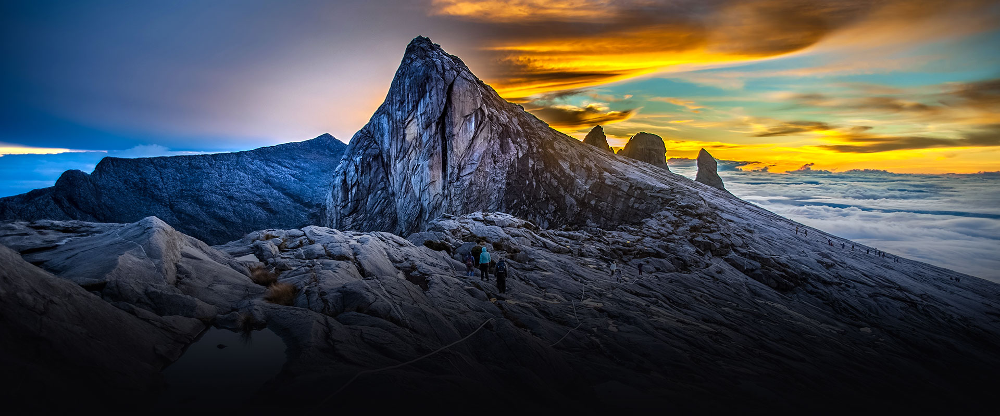
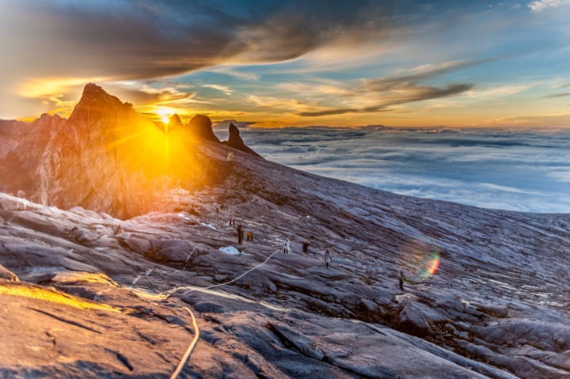
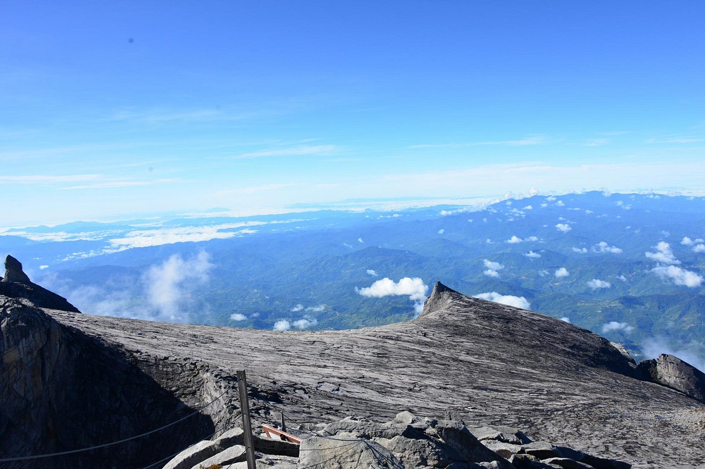

Добро пожаловать на Кинабалу!
Тут мы рассказываем о прекрасной горе Кинабалу, которая находится в Малайзии
Кинаба́лу (малайск. Gunung Kinabalu) — четвёртая по высоте гора в Юго-Восточной Азии, высота — 4095 метров. Расположена на территории национального парка Кинабалу (входит в список Всемирного наследия ЮНЕСКО) на востоке Малайзии в штате Сабах, расположенного на острове Калимантан, среди тропических джунглей.

Флора и фауна
Национальный парк Кинабалу известен исключительным биологическим разнообразием и высокой долей эндемиков среди населяющих его организмов. К примеру, только семейство орхидных представлено восемьюстами видов, а среди шестисот видов папоротников пятьдесят произрастают только в парке Кинабалу.
В настоящее время известно около двенадцати видов эндемичных кольчатых червей, эндемичная белозубка Crocidura baluensis. В парке отмечено 326 видов птиц, около сотни видов млекопитающих, в том числе четыре вида человекообразных обезьян, включая орангутанов.
Девиз: «Take nothing but photographs. Leave nothing but footprints. Keep nothing but memories» (перевод с английского: «Не берите ничего кроме фотоснимков; не оставляйте ничего кроме следов ног; возьмите на память только воспоминания»)

Геологическая характеристика
Кинабалу — очень молодая, в геологическом масштабе времени, гора. Продолжает подниматься со скоростью порядка пяти миллиметров в год. Сложена гранитами. На формирование рельефа большое влияние оказало оледенение в эпоху плейстоцена.
Название вершин горы Кинабалу
- Пик сэра Хью Лоу (Low’s Peak, 4095 метра)
- Святого Иоанна (St John Peak, 4098 метров, закрыта для посетителей)
- Уши Осла (Donkey Ears Peak, 4055 метров)
- Тунку Абдул Рахман (Tunku Abdul Rahman)
- Безобразная Сестра (Ugly Sister Peak, 4032 метра)
- Король Эдвард (King Edward Peak)
- Пик Александра (Alexandras Peak, 4033 метра)
- Южный Пик (South Peak, 3935 метра)
Туризм
Восхождение на гору Кинабалу происходит, как правило, в два этапа: подъем с 8 утра и до 17.00 дня на высоту 3300 метров до ночлега Лабан Рата (Laban Rata). Второй этап — восхождение на вершину 4095 метров, с 2.30 ночи до 4.00 утра, чтобы встретить рассвет над островом Борнео.
Спуск с вершины Кинабалу можно осуществлять по системе via Ferrata.
Мировой Горный Забег на гору Кинабалу (англ. The World’s Toughest Mountain Race) проводится ежегодно в последние субботу и воскресенье октября месяца. Участники гонки должны как можно быстрее подняться на высоту 4095 метров и спуститься вниз. В забеге 24 и 25 октября 2009 года приняли участие более 400 легкоатлетов. Общая протяжённость маршрута вверх и вниз составляет 21 километр.
Рекордное время 2008 года у испанца Agustu Roc Amador — 2 часа 44 минуты и 47 секунд.
Дополнительные материалы, с которыми стоит ознакомиться
Галерея красот Кинабалу

